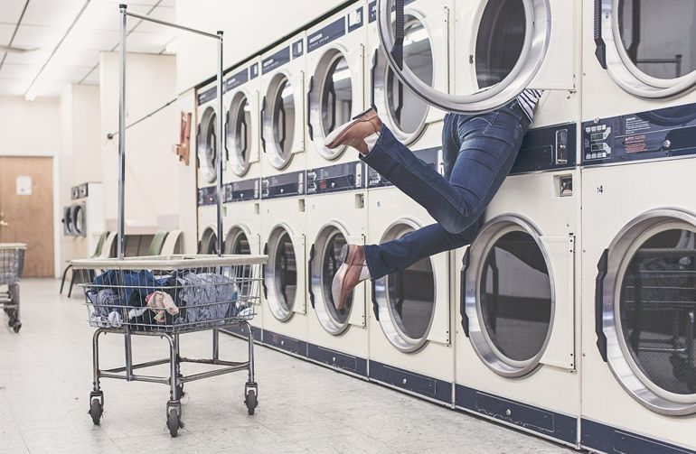

A Guide to Doing Laundry and Finding the Best Local Laundromat Near You
Finding the best laundromat near you isn’t as simple as just looking for a local location and heading over. Locations with older machines may mean that you’re not getting the best quality you can, and you don’t want to pay more per load for faulty or old units. Here are a few tips to remember while looking around for the best laundromat near you.
Lugging your clothes around town, clean or not, can be frustrating. Find a laundromat that’s local and easy to access all the way from parking to finding an open machine. It’s no fun getting to the location and finding out that you have to wait even longer since all of the machines are being used.
— Ian A. Johnson, Small Business Owner

We live in a world where not having cash on you isn’t a rare occurrence anymore. Modern laundromats allow you to pay for your machine use with a credit card, which can make life a lot easier.

Sort and Segregate Dirty Laundry by Color, Fabric, and Soil Level
If you’re like most people, all of your clothes are sitting in a laundry basket in a lump of colors, fabrics, and different levels of dirty. While you definitely have the ability to throw everything into the washer without separating anything, you’ll most likely regret it. Different colors and fabrics have special wash requirements that might not work well with the other. Below is a quick list of how to approach a basket full of clothes before washing.
Choosing the Right Detergent
It’s almost impossible to not be a bit overwhelmed when you take a look at the laundry products at your local grocery or department store. There are hundreds of different options and scents of cleaning products for garments, but it’s easiest to break it down by type. From powder to liquid, here’s how you should choose the right detergent for your needs. Powder detergent doesn’t have the same “cool” factor as some of the other heavily marketed laundry products on the market, but it’s the easiest choice for everyday laundry that isn’t heavily soiled.
Autor
We live in a world where not having cash on you isn’t a rare occurrence anymore. Modern laundromats allow you to pay for your machine use with a credit card, which can make life a lot easier.
Comments (3)
We live in a world where not having cash on you isn’t a rare occurrence anymore. Modern laundromats allow you to pay for your machine use with a credit card, which can make life a lot easier.
Reply
It’s almost impossible to not be a bit overwhelmed when you take a look at the laundry products at your local grocery or department store. There are hundreds of different options and scents of cleaning products...
ReplyFrom powder to liquid, here’s how you should choose the right detergent for your needs. Powder detergent doesn’t have the same “cool” factor as some of the other heavily marketed laundry products on the market...
ReplySearch
Categories
Archive
Recent Posts
21 July, 2020
How To Get Stains Out Of Dry Clean Only Clothes
28 July, 2020